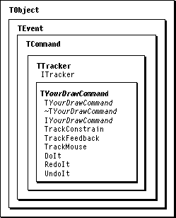

Recipes--The Mouse
The recipes and sample code in this section demonstrate how to implement a recordable drawing command, respond to a drawing Apple event, drag with the mouse, and implement autoscrolling in a tracker command. Figure 15-1 shows the classes and methods used to create commands that track the mouse.Figure 15-1 Classes and methods used to track the mouse

Recipe--Implementing a Recordable Drawing Command
MacApp's IconEdit sample application supports drawing an icon at any level of magnification. A user can click the mouse button to turn an individual pixel on or off, or click and drag to modify a series of pixels. Drawing is performed by a command that tracks the mouse and modifies pixels. Drawing is recordable because, on completion, the command sends an Apple event that describes the drawing that took place. (The recipe following this one describes how to respond to a drawing Apple event.)To implement a recordable, undoable drawing command, you perform these steps:
The sample code shown in this recipe is from the IconEdit application.
- Define a command constant for a drawing command.
- Add a Buzzwords menu entry to supply menu text for undoing the command.
- Define a subclass of
TTrackerto track the mouse and perform drawing.
- Provide constructor, destructor, and initialization methods.
- Override the
DoIt,UndoIt, andRedoItmethods.- Override the
TrackConstrainmethod.- Override the
TrackFeedbackmethod.- Override the
TrackMousemethod.- Define a class to send an Apple event describing the drawing operation.
- Override the
DoMouseCommandmethod in the view class to create and post a drawing command.Define a Command Constant for a Drawing Command
The IconEdit application defines a command number for the icon-drawing command in both its resource definition file and its implementation file. In the resource file,IconEdit.r, the command is defined as#define cDrawCommand1003In the implementation file,IconEdit.cp, the command is defined asconst CommandNumber cDrawCommand =1003; // For drawing in icon view.As an alternative, IconEdit could place the#definedefinition in a header file (such asIconEdit.r.h), then include it into both the resource definition file (IconEdit.r) and the C++ code file (IconEdit.cp). Because the constant is defined in only one place, there is less chance for error. However, the type checking provided by the const CommandNumber definition is lost.Add a Buzzwords Menu Entry
When a command (such as Cut) appears in a menu, MacApp uses the text from the menu item for the Undo menu command (Undo Cut). Because the drawing command does not appear in any menu, you must inform MacApp of the text to display for Undo. You supply this information in a special'CMNU'resource called the Buzzwords menu (described beginning on page 305).The IconEdit application uses the following line in its Buzzwords menu in the file
IconEdit.r:/* [2] */"Drawing", noIcon, noKey, noMark, plain, cDrawCommand;This line tells MacApp to display the text "Undo Drawing" when Undo is enabled for a command object with the command number cDrawCommand.Define a Subclass of TTracker to Track the Mouse and Perform Drawing
The IconEdit application defines the classTIconDrawCommandto perform user icon drawing.class TIconDrawCommand : public TTracker { MA_DECLARE_CLASS; protected: TIconDocument*fIconDocument;// The document affected by this command. TIconEditView*fIconEditView;// The view in which this command draws. TIconBitMap*fIconBitMap;// The icon in which drawing takes place. TIconBitMap*fIconBitMapModel;// Place of storage for points to be drawn // by Apple event. TIconBitMap*fOriginalIcon;// A copy of the original icon. Boolean fTurnBitsOn;// A flag for turning bits on or off. CRGBColor fColor; // Drawing color (property of fIconDocument). public: TIconDrawCommand(); // Constructor. virtual ~TIconDrawCommand();// Destructor. virtual void IIconDrawCommand(TIconEditView* itsIconEditView, TIconDocument* itsIconDocument, VPoint& theMouse); // Each of these methods sets the icon bitmap, using the fIconBitMap and // fOriginalIcon fields to switch between the do, undo, and redo icons. virtual void DoIt(); // Override. virtual void RedoIt(); // Override. virtual void UndoIt(); // Override. virtual void TrackConstrain(TrackPhaseaTrackPhase, const VPoint&anchorPoint, const VPoint&previousPoint, VPoint& nextPoint, Boolean mouseDidMove);// Override. virtual void TrackFeedback(TrackPhaseaTrackPhase, const VPoint&anchorPoint, const VPoint&previousPoint, const VPoint&nextPoint, Boolean mouseDidMove, Boolean turnItOn); // Override. virtual TTracker* TrackMouse(TrackPhaseaTrackPhase, VPoint& anchorPoint, VPoint& previousPoint, VPoint& nextPoint, Boolean mouseDidMove);// Override. }; // TIconDrawCommandEach of the methods of the TIconDrawCommand class is discussed in the sections that follow.Constructor
The constructor method for TIconDrawCommand is called automatically when a drawing command is instantiated with thenewoperator. It sets the object's fields to default or safe values:TIconDrawCommand::TIconDrawCommand() { fIconDocument = NULL; fIconEditView = NULL; fIconBitMap = NULL; fOriginalIcon = NULL; fTurnBitsOn = TRUE; fIconBitMapModel = NULL; }
- Note
- The default is to turn bits on when drawing, but in fact, fTurnBitsOn is reset when drawing begins, based on whether the bit under the mouse is on or off.
Destructor
The destructor method for TIconDrawCommand is called automatically when an object of this type is deleted. It frees whichever icon bitmap is not in use: if the command is done, it frees the original bitmap; if the command is undone, it frees the modified bitmap (so in effect, no drawing took place). It always frees the bitmap model, which is used to store points to be drawn by an Apple event (if any drawing actually takes place):TIconDrawCommand::~TIconDrawCommand() { // If the command is done, dispose of original icon. // Otherwise, dispose of icon that was drawn. if (fCommandDone) fOriginalIcon = (TIconBitMap*)FreeIfObject(fOriginalIcon); else fIconBitMap = (TIconBitMap*)FreeIfObject(fIconBitMap); // Free the bitmap model. fIconBitMapModel = (TIconBitMap*)FreeIfObject(fIconBitMapModel); }Initialization Method
The following is the initialization method for the TIconDrawCommand class:void TIconDrawCommand::IIconDrawCommand(TIconEditView*itsIconEditView, TIconDocument*itsIconDocument, VPoint& theMouse) { this->ITracker(cDrawCommand,// Initialize the command . . . itsIconDocument,// Its context. kCanUndo, // Command is undoable. kCausesChange, // Command changes its document. itsIconDocument,// Associate it with a notifying object. itsIconEditView,// Associate it with a view. // Associate it with a scroller from // any superview. itsIconEditView->GetScroller(TRUE), theMouse); // Initial point. fConstrainsMouse = TRUE; // Want TrackConstrain called. fIconEditView = itsIconEditView;// Set two convenience fields. fIconDocument = itsIconDocument; // Get reference to icon being drawn. fIconBitMap = fIconDocument->ReturnBitMap(); fIconBitMapModel = new TIconBitMap;// Create a model for the bits being set. fIconBitMapModel->IIconBitMap(); fIconBitMapModel->Clear(); fColor = fIconDocument->GetIconColor();// Store the drawing color. }The IIconDrawCommand method first calls the initialization method of its parent class,TTracker. It then sets fConstrainsMouse toTRUEso that the TrackConstrain method will be called. It also sets two convenience fields that refer to document and view objects. Finally, its sets the fIconBitMap field to the current bitmap (the current icon bitmap before any drawing takes place) and creates an empty bitmap to store a record of each bit that is modified (to use when sending an Apple event to describe whatever drawing takes place).Note that the
fOriginalIconfield is initialized to a copy of thefIconBitMapfield the first time theTrackMousemethod is called (shown below).TrackConstrain
Drawing commands typically constrain the mouse to deal with border areas or to snap drawing to a grid. Views in the IconEdit application have a border area in which drawing is not allowed, so theTrackConstrainmethod constrains drawing to the content area of the window, adjusted for the border area:void TIconDrawCommand::TrackConstrain(TrackPhase/*aTrackPhase*/, const VPoint&/*anchorPoint*/ , const VPoint&/*previousPoint*/, VPoint& nextPoint, Boolean /*mouseDidMove*/) { // This is on several lines so that Max can be "inlined". VCoordinate h = Min(nextPoint.h, fIconEditView->fSize.h - kBorder - 1); VCoordinate v = Min(nextPoint.v, fIconEditView->fSize.v - kBorder - 1); h = Max(h, (long) kBorder); v = Max(v, (long) kBorder); nextPoint = VPoint(h, v); }Note that theTrackConstrainmethod does not use most of its parameters, so they are commented out to avoid compiler warnings.TrackFeedback
The default feedback provided by theTrackFeedbackmethod of theTTrackercommand is a gray rectangle that expands and contracts as the user drags with the mouse. Because the TIconDrawCommand class turns the icon bits on or off in theTrackMousemethod (shown below) as drawing takes place, no other feedback is needed. To disable the default feedback, the TIconDrawCommand class overrides theTrackFeedbackmethod with an empty implementation.void TIconDrawCommand::TrackFeedback( TrackPhase /*aTrackPhase*/,const VPoint&/*anchorPoint*/, const VPoint&/*previousPoint*/,const VPoint&/*nextPoint*/, Boolean /*mouseDidMove*/,Boolean /*turnItOn*/) { // Overridden to avoid default feedback. }Since this method does nothing, all parameters are commented out.TrackMouse
For the TIconDrawCommand class, the TrackMouse method tracks the mouse, turns bits on or off, and, when drawing is complete, sends an Apple event describing the operation.TTracker* TIconDrawCommand::TrackMouse(TrackPhaseaTrackPhase, VPoint& /*anchorPoint*/, VPoint& previousPoint, VPoint& nextPoint, Boolean mouseDidMove) { VPointfromBit; VPointtoBit; VPointiconBit; short lineLength; float deltaH; float deltaV; float h; float v; // Convert nextPoint and previousPoint to bit locations in the icon. fIconEditView->PointToBit(fIconEditView->ViewToQDPt(nextPoint), toBit); fIconEditView->PointToBit(fIconEditView->ViewToQDPt(previousPoint), fromBit); if (aTrackPhase == trackBegin) // First time through. { // Determine whether to turn bits on or off. fTurnBitsOn =!fIconBitMap->GetBit(toBit); // Make a copy of the original bitmap for undo. fOriginalIcon = fIconBitMap->Copy(); } // If mouse moved since last time . . . if (mouseDidMove) { // The following sets bits in the icon from the bit at previousPoint to the bit // at nextPoint. It is based on a simple line-drawing algorithm. The line // length calculations are on two lines so Max can be inlined. lineLength = (short) Max(labs(toBit.h - fromBit.h), labs(toBit.v - fromBit.v)); lineLength = (short) Max(1,lineLength); deltaH = (toBit.h - fromBit.h) / lineLength; deltaV = (toBit.v - fromBit.v) / lineLength; h = fromBit.h + 0.5; v = fromBit.v + 0.5; for (short i = 0; i < lineLength; i++) { iconBit.h = h; iconBit.v = v; // Set the bit in the bitmap and draw it in the icon view. fIconBitMap->SetBit(iconBit, fTurnBitsOn); fIconEditView->DrawBit(iconBit, fTurnBitsOn, fColor); // Store the change by setting a bit in the model. The model will be // used to generate a Draw Points event for recordability. fIconBitMapModel->SetBit(iconBit, TRUE); h = h + deltaH; v = v + deltaV; } } // If finished tracking. if (aTrackPhase == trackEnd) { // Send a recordable Apple event. (NOTE: It would be more robust to // post a recordable, undoable command to do the drawing.) TDrawPointsAppleEvent *aDrawEvent = new TDrawPointsAppleEvent; aDrawEvent->IDrawPointsAppleEvent(fIconDocument,fIconBitMapModel,fTurnBitsOn); aDrawEvent->Send(); } // Return same command object. return this; } // TIconDrawCommand::TrackMouseThe TrackMouse method is called repeatedly until the user releases the mouse button. It makes use of theaTrackPhaseparameter to determine what state the mouse is currently in:trackBeginindicates tracking has just begun (TrackMouse is called for the first time),trackContinueindicates tracking is continuing, andtrackEndindicates the user has released the mouse (TrackMouse won't be called again).The
TrackMousemethod first converts thenextPointandpreviousPointmouse location parameters to bit locations in the icon. Then, if the track phase istrackBegin, it performs two operations. It sets fTurnBitsOn based on whether the first bit was on or off--all bits will be turned on or off based on the first changed bit. And it creates a copy of the original icon bitmap in case drawing is undone.If the mouse has moved,
TrackMousedetermines which bits have been affected. For each modified bit, it does the following:If the track phase is
- It sets the bit in the icon bitmap.
- It causes the bit to be redrawn.
- It sets the bit in the
fIconBitMapModelfield, which stores a record of each modified bit.trackEnd,TrackMousecreates and initializes aTDrawPointsAppleEventobject and calls itsSendmethod to send an Apple event describing the drawing that occurred. TheTDrawPointsAppleEventclass is described in the next section.Finally, each time
TrackMouseis executed it must return a command object to be called as tracking continues. TheTrackMousemethod could create a new command object each time, but it is more efficient to return the same command object, which is done by the linereturn this;
Define a Class to Send an Apple Event Describing the Drawing Operation
The IconEdit application defines theTDrawPointsAppleEventclass, a subclass ofTAppleEvent, to send an Apple event that turns points in a bitmap on or off. The command's initialization method,IDrawPointsAppleEvent, does the following:The recipe following this one shows how to handle the Draw Points event by posting an undoable drawing command.
- It creates an Apple event.
- It extracts the points from the passed icon bitmap and stores them in a dynamic array point list.
- It writes the point list to the Apple event's parameter list.
- If the drawing operation turns bits off, it adds a Boolean parameter indicating that the points should be erased.
Override DoMouseCommand to Create and Post a Drawing Command
With the previous steps completed, the framework is in place to supply an undoable, recordable command for drawing with the mouse. TheTIconEditViewclass overrides theDoMouseCommandmethod:void TIconEditView::DoMouseCommand(VPoint&theMouse, TToolboxEvent*/*event*/ , CPoint /*hysteresis*/) { VPoint iconBit; TIconDrawCommand*anIconDrawCommand; // If the mouse location is within the icon, create and post // a command for icon drawing. Otherwise, ignore it (don't // call Inherited). if (this->PointToBit(theMouse, iconBit)) { anIconDrawCommand = new TIconDrawCommand; anIconDrawCommand->IIconDrawCommand(this, fIconDocument, theMouse); this->PostCommand(anIconDrawCommand); } }If the mouse location is within the view's icon, this method creates a drawing command and posts it to the MacApp command queue. Otherwise, it does nothing.Recipe--Supporting Drawing Specified by an Apple Event
The previous recipe implements a drawing command that sends an Apple event to describe the drawing that takes place in an icon view (turning individual bits in the icon on or off). This recipe describes how an application can respond to that Draw Points event.To support drawing specified by a Draw Points event, you perform these steps:
The sample code shown in this recipe is from the IconEdit application.
- Define a command constant for a command that performs drawing based on the information in a Draw Points event.
- Add a Buzzwords menu entry to supply menu text for undoing the command.
- Describe the Draw Points event in the
'aete'resource.- Map the Draw Points event to a command number in an
'aedt'resource.- Define a command class to work with the Draw Points event.
- Override the
DoScriptCommandmethod in the document class to create a draw points command when the Draw Points event is received.Define a Command Constant for a Draw Points Command
The IconEdit application defines a command number for a draw points command in both its resource definition file and its implementation file. In the resource file,IconEdit.r, the command is defined as#define cDrawPointsCommand1004In the implementation file,IconEdit.cp, the command is defined asconst CommandNumber cDrawPointsCommand = 1004;Add a Buzzwords Menu Entry
The IconEdit application uses the following line in its Buzzwords menu in the fileIconEdit.r:/* [3] */"Drawing", noIcon, noKey, noMark, plain, cDrawPointsCommand;This line tells MacApp to display the text "Undo Drawing" when Undo is enabled for a command object with the command number cDrawPointsCommand.Describe the Draw Points Event in the 'aete' Resource
The Apple event terminology extension ('aete') resource is described in Chapter 6, "Scripting." MacApp provides an'aete'resource that defines terminology for the four required Apple events, as well as for all of the events in the Core suite supported by MacApp.The IconEdit application extends MacApp's
'aete'resource to add information describing the Draw Points event. IconEdit's'aete'resource, shown on the following pages, is defined in the fileIconEdit.r.resource kAETerminologyExtension (0, #if qNames "English Terminology", #endif purgeable) { // Some text omitted. //========================== // IconEdit Suite //========================== // [4] "IconEdit Suite", "Events that are specific to the IconEdit application", 'ICED', 1, 1, { // array Events: 4 elements // [1] "invert", // Some text omitted. // [4] "draw_points", "draw or erase a list of points in the specified view.", 'ICED', 'DrPt', noReply, "", replyOptional, singleItem, notEnumerated, notTightBindingFunction, Reserved8, verbEvent, Reserved3, typeObjectSpecifier, "the document containing the bitmap to draw in", directParamRequired, singleItem, notEnumerated, doesntChangeState, Reserved12, { // array OtherParams: 2 elements // [1] "points", 'kPtL', cAEList, "list of points to draw or erase", required, listOfItems, notEnumerated, Reserved9, prepositionParam, notFeminine, notMasculine, singular, // [2] "do_erase", 'kErs', typeBoolean, "optional parameter to erase points (default is draw)", optional, singleItem, notEnumerated, Reserved9, prepositionParam, notFeminine, notMasculine, singular } // Some text omitted. } }The IconEdit application adds four events for the "IconEdit suite" of Apple events. The Draw Points Apple event definition explains that the Apple event draws or erases a list of points in the specified view. The definition further states that the Apple eventFor more information about the format of an
- must specify a document
- must specify a list of points
- may optionally specify a Boolean value indicating that the points should be erased (the default is to draw points)
'aete'resource, see the "Apple Event Terminology Resources" chapter of Inside Macintosh: Interapplication Communication.Map the Draw Points Event to a Command Number
The IconEdit application uses the following'aedt'resource to map the Apple events it defines to MacApp command numbers:resource 'aedt' (kAEIconEditDispatchTable, #if qNames "IconEdit Events", #endif purgeable) { { // array: 4 elements // [1] 'ICED', 'INVT', cInvert, // [2] 'ICED', 'ZmIn', cZoomIn, // [3] 'ICED', 'ZmOt', cZoomOut, // [4] 'ICED', 'DrPt', cDrawPointsCommand } };This table tells the Apple Event Manager that when the application receives an Apple event with class ID 'ICED' and descriptor 'DrPt', it should be mapped to the command number cDrawPointsCommand.Define a Command Class to Work With the Draw Points Event
The IconEdit application defines theTDrawPointsCommandclass to extract information from a Draw Points event and perform the specified drawing.The
TDrawPointsCommandclass is defined as follows:class TDrawPointsCommand : public TCommand { MA_DECLARE_CLASS; protected: TIconBitMap*fSavedBitMap;// Used in undoing and redoing. TIconDocument*fIconDocument; // Document affected by the command. Boolean fErasePoints;// If TRUE, erase, not draw. TDynamicArray*fPointList;// List of points to set or clear. public: TDrawPointsCommand(); // Constructor. virtual ~TDrawPointsCommand();// Destructor. virtual void IDrawPointsCommand(TIconDocument *itsIconDocument, TAppleEvent *theAppleEvent); virtual void DoIt(); // Override. virtual void RedoIt(); // Override. virtual void UndoIt(); // Override. };Constructor and Destructor
The constructor method sets fields to safe or default values:TDrawPointsCommand::TDrawPointsCommand() { fSavedBitMap = NULL; fIconDocument = NULL; fErasePoints = FALSE; // By default, turn bits on. }The destructor method frees any storage that needs freeing:TDrawPointsCommand::~TDrawPointsCommand() { if (fCommandDone) fSavedBitMap = (TIconBitMap *)FreeIfObject(fSavedBitMap); fPointList = (TDynamicArray *)FreeIfObject(fPointList); }Initialization Method
The initialization method for the TDrawPointsCommand class initializes the command and extracts drawing information from the Draw Points event:void TDrawPointsCommand::IDrawPointsCommand( TIconDocument*itsIconDocument, TAppleEvent*theAppleEvent) { fIconDocument = itsIconDocument; // Initialize the parent command class. this->ICommand(cDrawPointsCommand, itsIconDocument, kCanUndo, kCausesChange, itsIconDocument); // Create an array and read the list of points from the Apple event. fPointList = new TDynamicArray; fPointList->IDynamicArray(1, sizeof(CPoint)); theAppleEvent->ReadPtrList(keyPointList, typeQDPoint, fPointList); // Look for the optional erasePoints parameter. if (theAppleEvent->HasParameter(keyErasePoints)) fErasePoints = theAppleEvent->ReadBoolean(keyErasePoints); }DoIt Method
The TDrawPointsCommand::DoItmethod creates a copy of the document's current bitmap, sets or erases the bits specified by the point list, and causes a redraw to occur. It also frees the point list, since it won't be needed anymore:void TDrawPointsCommand::DoIt() { // Get the current bitmap from the document and make a copy. TIconBitMap*targetBitMap = fIconDocument->ReturnBitMap(); fSavedBitMap = targetBitMap->Copy(); // Draw the points listed in the point list. CArrayIteratoriter(fPointList); CPoint aPoint; VPoint iconBit; for (ArrayIndex i = iter.FirstIndex(); iter.More(); i = iter.NextIndex()) { fPointList->GetElementsAt(i, (Point *)aPoint, 1); iconBit.h = aPoint.h; iconBit.v = aPoint.v; // Set the bit in the document's bitmap. targetBitMap->SetBit(iconBit, !fErasePoints); } // Setting the icon will cause a redraw. fIconDocument->SetIcon(targetBitMap); // Free the point list--it won't be used again. fPointList = (TDynamicArray *)FreeIfObject(fPointList); }UndoIt and RedoIt Methods
TheUndoItmethod switches the current and saved bitmaps:void TDrawPointsCommand::UndoIt() { // Switch the document's current bitmap with the saved bitmap. TIconBitMap *tempBitMap = fIconDocument->ReturnBitMap()->Copy(); fIconDocument->SetIcon(fSavedBitMap); fSavedBitMap = tempBitMap; }TheRedoItmethod is identical to theUndoItmethod.Override DoScriptCommand to Create a Draw Points Command
The Apple event sent by IconEdit'sTIconDrawCommandspecifies the document as the target object. TheTIconDocumentclass overrides theDoScriptCommandmethod so that when it receives an Apple event with the command numbercDrawPointsCommand, it creates aTDrawPointsCommandobject and posts it to the MacApp command queue:void TIconDocument::DoScriptCommand(CommandNumberaCommand, TAppleEvent*message, TAppleEvent*reply) { switch (aCommand) { // Some cases not shown. case cDrawPointsCommand: { TDrawPointsCommand *drawPointsCommand = new TDrawPointsCommand; drawPointsCommand->IDrawPointsCommand(this, message); drawPointsCommand->Process(); } break; default: Inherited::DoScriptCommand(aCommand, message, reply); break; } }As mentioned in a previous section, the IDrawPointsCommand method is responsible for extracting the drawing information from the Draw Points event.When the TDrawPointsCommand object is retrieved from the command queue, its
DoItmethod sets or erases the specified points. Because the command is undoable, the user can reverse the drawing.Note that the DoScriptCommand method calls drawPointsCommand->Process(), rather than posting the command to the command queue. This ensures proper error handling for the Apple event, should an error occur while processing the command.
Dragging With the Mouse--A General Outline
To drag objects in a view with the mouse (not for a drag-and-drop operation), you follow these general guidelines:
- In your view class, do the following:
- Add a Boolean variable
fDraggingto record whether dragging is currently in effect. Initialize this variable toFALSEin theIYourViewmethod. (Be careful not to use a variable name that will conflict with any of MacApp's drag-and-drop fields and methods.)- In the
DoMouseCommandmethod, create and initialize a dragger command object.- As an alternative first step, in your view class you can
- Define a pointer reference
fTrackerto a dragger object. Set it toNULLin your constructor method. If desired, create a dragger object in theIYourViewmethod and makefTrackerpoint to it.- At an appropriate time, create a dragger object and make
fTrackerpoint to it (if you didn't already do so in theIYourViewmethod).- In the
DrawandDoHighlightSelectionmethods, checkfTracker. If it isn'tNULL, defer to it for drawing or highlighting.- Define a command constant for a dragging command and add a Buzzwords menu entry to supply text for undoing the dragging command.
- Define a dragger command that is a subclass of
TTracker.- In your dragger class, add a field or fields to record how far the objects have been dragged.
- Override the
TrackFeedbackmethod in your dragger class to show dragging. This is often done by drawing a frame rectangle that encloses the dragged objects. TheTrackFeedbackmethod examines the previous and current point locations to determine how far to move the rectangle.- To constrain dragging to a grid, override the
TrackConstrainmethod to align the dragging rectangle on a grid point.- Override the
TrackMousemethod to handle two cases.If this is the first move, do the following:
- Turn off selection highlighting for individual shapes.
- Set the view's
fDraggingfield toTRUE.- Update the window to force redrawing.
- Focus the view.
If dragging has just finished, do the following:
- Set the field or fields that record how far the objects were dragged.
- Set the view's
fDraggingfield toFALSE.- Override the
DoIt,UndoIt, andRedoItmethods. Each of these methods uses the field or fields that record how far the objects were dragged. How the objects are actually moved depends on your implementation. ADoIt,UndoIt, orRedoItmethod may notify the document or view class that holds the objects of the required movement or it might notify the objects themselves.Recipe--Implementing Autoscrolling
Autoscrolling refers to the process by which a view scrolls automatically when a user drags the cursor to a boundary of the view. Autoscrolling may be appropriate, for example, during drawing or dragging in a view. To implement autoscrolling in your application, just associate a scroller with the tracker command object you use to track the mouse.When a tracker command object is initialized, one of the parameters specifies the scroller affected by the command. For example, in the Calc sample application, the command class that handles cell selection in the spreadsheet is a subclass of
TTracker. When aTCellSelectCommandobject is initialized, it makes the following call from theICellSelectCommandmethod:this->ITracker(cNoCommand, // Command number. itsView, // Its context. kCantUndo, // Can't undo selection. kDoesNotCauseChange, // Doesn't cause changes. NULL, // No object to notify. itsView, // Associate it with a view. itsView->GetScroller(kAnySuperView), // Associate with a scroller. itsMouse); // Current mouse position.TheGetScrollermethod retrieves a reference to a scroller object from any view in the view hierarchy. TheITrackermethod associates that scroller with the tracker command object. That is all that's required to make autoscrolling work as a user drags to select cells.
- Note
- The default
AutoScrollmethod of theTScrollerclass calculates a proportional amount to scroll by. You can override that method to control autoscrolling more precisely.